En esta lección se explica cómo configurar Eclipse for PHP developers (Eclipse PHP) para crear y ejecutar archivos PHP o HTML y organizarlos en carpetas:
Elección del modo de trabajo
En Eclipse PHP los archivos PHP se agrupan en proyectos (en inglés, projects) que a su vez se agrupan en espacios de trabajo (en inglés, workspaces). Aunque se pueden tener definidos varios espacios de trabajo, sólo se puede tener abierto un espacio de trabajo. Para cambiar de espacio de trabajo, hay que cerrar y abrir de nuevo Eclipse.
Físicamente, cada espacio de trabajo se guarda en el disco duro del ordenador en una carpeta distinta. En la carpeta del espacio de trabajo, Eclipse PHP guarda los archivos de configuración de Eclipse y la información sobre los proyectos y las carpetas y archivos incluidos en cada proyecto.
Lo archivos PHP se podrían guardar también en el espacio de trabajo, pero yo recomiendo guardarlos por separado, para facilitar la portabilidad.
En esta lección se explica los pasos a realizar de manera que:
Eclipse PHP esté en la carpeta "C:\software\eclipse-php-oxygen" (como se explica en la lección Instalación de Eclipse PHP)
el espacio de trabajo esté en la carpeta "C:\software\workspace-nombre-de-usuario-php-oxygen"
los archivos PHP estén en la carpeta "Mis documentos\...".
desde Eclipse se puedan abrir y ejecutar los archivos en el navegador mediante la URL "http://localhost/...".
Para esto último habrá que crear un alias en Apache (no se recomienda modificar la directiva DocumentRoot de Apache).
En el apartado Configurar Eclipse PHP y Apache en clase se indica cómo tendrá que hacerse en clase la configuración de Eclipse PHP y Apache para que varios alumnos puedan utilizar el mismo ordenador sin molestarse unos a otros.
Espacio de trabajo (Workspace)
Al iniciar Eclipse PHP mientras se carga el programa se muestra una imagen que indica la versión de Eclipse, en este caso Eclipse PHP Oxygen.1 (publicada en octubre de 2017).
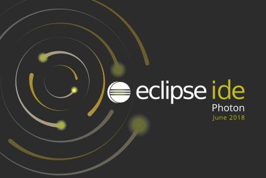
Cada vez que se inicia Eclipse PHP, el programa pregunta el espacio de trabajo a utilizar y muestra el último espacio de trabajo utilizado (aunque se pueden elegir otros). Si se marca la casilla de verificación "Use this as the default ...", Eclipse deja de hacer esta pregunta y utiliza siempre el mismo espacio de trabajo, lo que no es aconsejable.
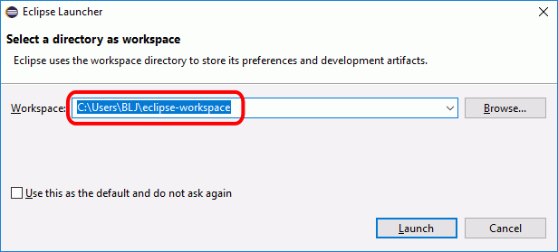
En Windows el espacio de trabajo predeterminado se encuentra en la carpeta de usuario. En este curso se recomienda crear el workspace en la carpeta C:\software\workspace-nombre-de-usuario-php-oxygen, (fuera de la carpeta eclipse). Para elegir la ubicación del espacio de trabajo se puede escribir directamente en la caja de texto o hacer clic en el botón "Browse...". Una vez elegida la ubicación deseada, hay que hacer clic en el botón OK.
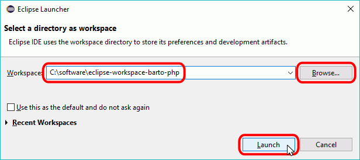
Una vez iniciado Eclipse PHP, puede cambiar de espacio de trabajo mediante el menú "File > Switch Workspace".
Para eliminar un espacio de trabajo, simplemente borre la carpeta que lo contiene. Una vez borrado un espacio de trabajo, Eclipse PHP sigue mostrando la carpeta en la lista desplegable aunque el espacio de trabajo ya no exista. Si vuelve a elegir un espacio de trabajo ya borrado, Eclipse PHP lo volverá a crear.
La primera vez que se inicie Eclipse PHP, el cortafuegos de Windows pide al usuario confirmación. Para poder utilizarlo autorice como mmínimo el acceso en redes privadas:
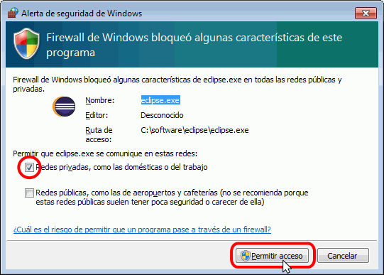
Si abre el programa "Firewall de Windows con seguridad avanzada", en el apartado de Reglas de entrada podrá ver las nuevas reglas añadidas.
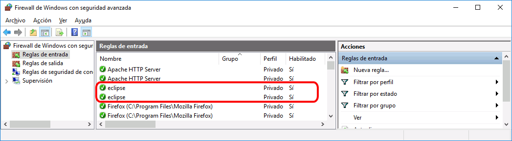
Banco de trabajo (Workbench) y perspectivas (Perspectives)
Al abrir Eclipse PHP por primera vez, se muestra una pantalla de Bienvenida con enlaces a tareas de configuración, ayuda sobre Eclipse PHP, etc.
Para que no se muestre esta pantalla de Bienvenida al abrir Eclipse PHP, puede desmarcar la casilla situada en la parte inferior derecha de la ventana.
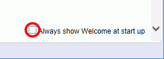
Cierre la pestaña "Welcome" o haga clic en el icono Workbench para mostrar la perspectiva PHP. En Eclipse, una perspectiva es un conjunto de vistas (subventanas) y menús. Las diferentes versiones de Eclipse (Java, PHP, CVS, etc) muestran distintas perspectivas predefinidas. Eclipse PHP muestra una perspectiva con vistas específicas para el desarrollo de PHP.
Si por cualquier motivo no se abriera la perspectiva PHP, puede abrirla haciendo clic en el menú Window > Perspective > Open Perspective > PHP o mediante el icono situado en el extremo derecho de la barra de herramientas.
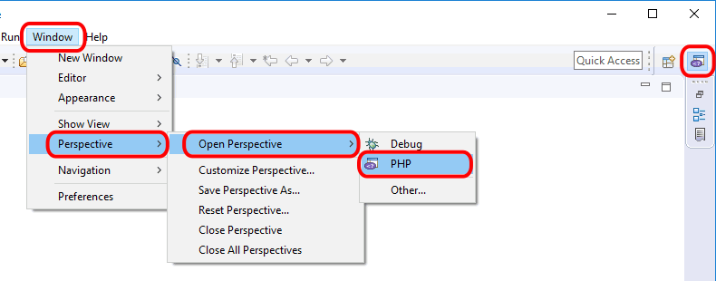
Puede ocultar las vistas Outline y Task List con el botón Minimize ...
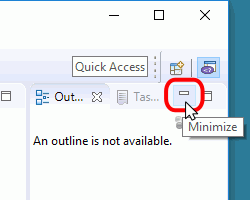
... para ampliar el espacio disponible para los programas:
Puede restaurar las vistas Outline y Task List con el botón Restore ...
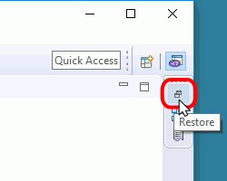
Crear proyectos (Project)
Eclipse PHP organiza los ficheros en proyectos, que se muestran en la ventana Explorador de Proyectos (Project Explorer) situada en la parte izquierda y que en un espacio de trabajo recién creado se muestra vacía.
Para crear un proyecto, elija la opción de menú File > New > Project...:
Se abrirá una ventana de creación del proyecto en el que puede escribir el nombre del proyecto. Este no debe contener espacios ni acentos, ya que Eclipse PHP lo utiliza para construir las URL. Los proyectos se guardan de forma predeterminada en el espacio de trabajo. En el ejemplo, se ha escrito el nombre "miproyecto". La ventana de creación de proyectos tiene dos pantallas más con opciones de configuración que no se tratan aquí. Para crear el proyecto, haga clic en Finish.
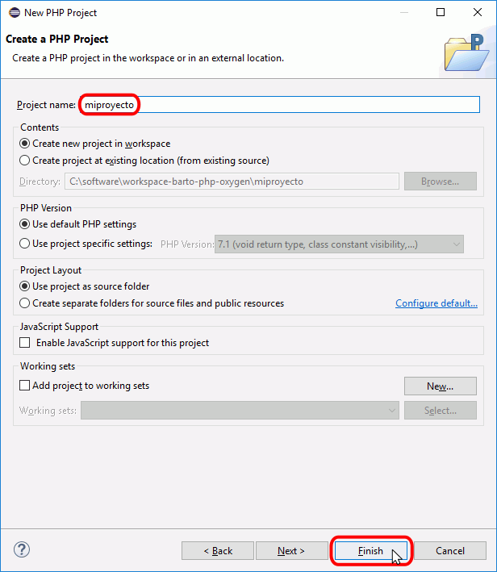
Una vez creado el proyecto, este aparece en la vista Explorador de Proyecto. El icono asociado a un proyecto es una carpeta con una letra P superpuesta.
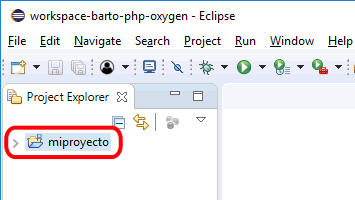
haga clic en la flecha situada a la izquierda del proyecto para mostrar el contenido del proyecto. La flecha cambia de orientación al mostrar u ocultar el contenido:
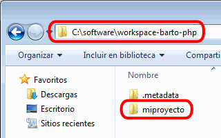
En el Explorador de archivos de Windows puede comprobar que en el espacio de trabajo se ha creado la carpeta "miproyecto":
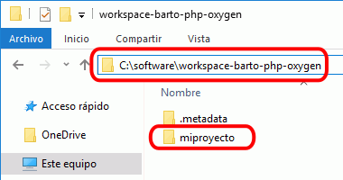
Crear carpetas enlazadas (Linked folder)
Una vez creado el proyecto, es conveniente crear una carpeta enlazada (o varias). Las carpetas enlazadas permiten que los archivos (páginas PHP, imágenes, hojas de estilo, etc.) no tengan que estar en el espacio de trabajo, sino que puedan estar en cualquier otro sitio del disco duro. Para crear una carpeta enlazada en un proyecto, seleccione el proyecto haciendo clic en él (su nombre se mostrará en la parte inferior de la ventana) y elija la opción de menú File > New > Folder (también puede hacer clic derecho sobre el proyecto y elegir la opción New > Folder).
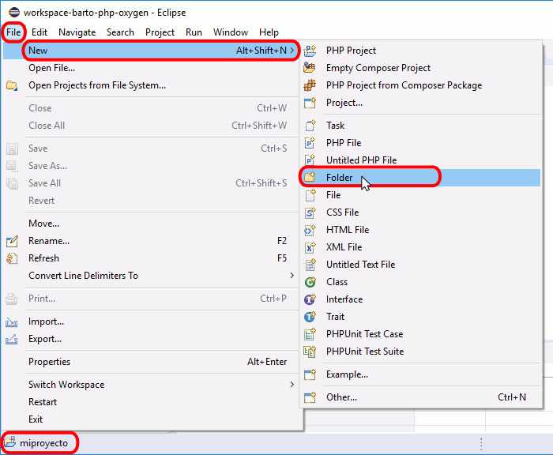
Se abrirá una ventana de creación de la carpeta. Escriba el nombre de la carpeta (Folder name). Este nombre no debe contener espacios ni acentos, ya que Eclipse PHP lo utiliza para construir las URL. En el ejemplo, se ha escrito el nombre "micarpeta". Haga clic en Advanced para mostrar más opciones.
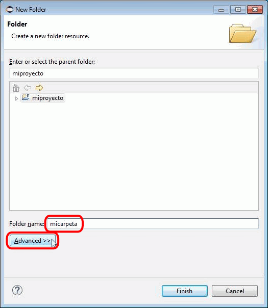
A continuación, marque la casilla "Link to alternate location (Linked Folder)" y haga clic en el botón "Browse..." para elegir la carpeta del disco en la que quiera guardar los archivos PHP.
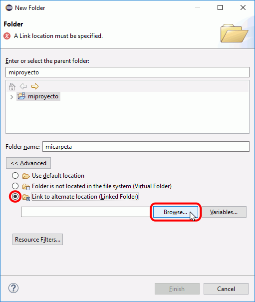
Una vez creada y/o elegida la carpeta (en el ejemplo se ha elegido la carpeta "Mis documentos\IAW Barto\PHP"), haga clic en el botón "Finish" para terminar.
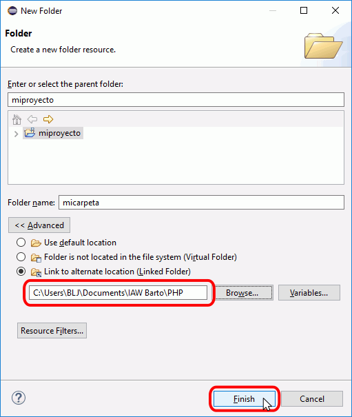
Una vez creada la carpeta, esta aparece en la vista Explorador de Proyecto. El icono asociado a las carpetas enlazadas incluye una flecha en la esquina inferior derecha del icono, lo que permite identificarlas fácilmente.
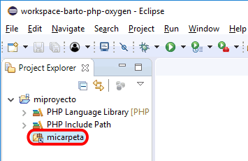
Crear carpetas no enlazadas (Folder)
Una vez creada la carpeta enlazada, en ella se pueden crear todos los archivos y subcarpetas que desee. Estas carpetas ya no necesitan ser carpetas enlazadas.
Para crear una subcarpeta en una carpeta, seleccione la carpeta haciendo clic en ella (su nombre se mostrará en la parte inferior de la ventana) y elija la opción de menú File > New > Folder (también puede hacer clic derecho en la carpeta y elegir la opción New > Folder).
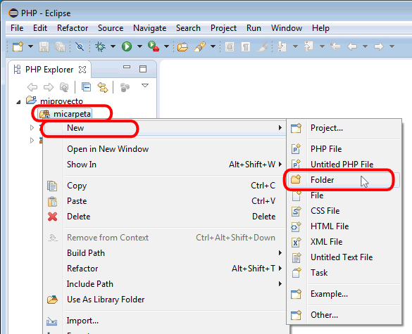
Se abrirá una ventana de creación de la carpeta. Escriba el nombre de la carpeta (Folder name) y haga clic en Finish. Este nombre no debe contener espacios ni acentos, ya que Eclipse PHP lo utiliza para construir las URL. En el ejemplo, se ha escrito el nombre "pruebas".
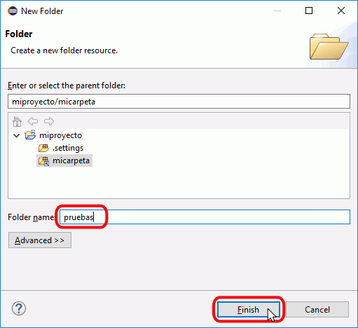
Una vez creada la carpeta, esta aparece en la vista Explorador de Proyecto (el icono de una carpeta no enlazada es distinto del de la carpeta enlazada).
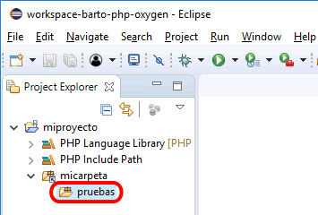
En el Explorador de archivos de Windows puede comprobar que en la carpeta superior (en el ejemplo, la carpeta a la que enlaza la carpeta enlazada micarpeta) se ha creado la carpeta "pruebas":
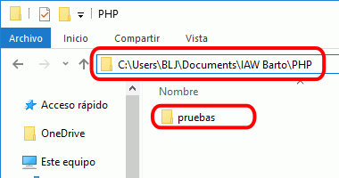
Crear archivos PHP (PHP File)
Para crear un archivo PHP en una carpeta, seleccione la carpeta haciendo clic en ella (su nombre se muestra en la parte inferior de la ventana) y elija la opción de menú File > New > PHP File (también puede hacer clic derecho sobre la carpeta y elegir la opción New > PHP File).
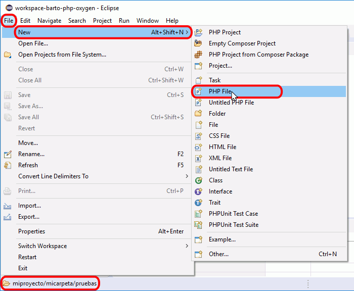
Se abrirá una ventana de creación de archivo. Escriba el nombre del archivo y haga clic en Finish. Este nombre no debe contener espacios ni acentos, ya que Eclipse PHP lo utiliza para construir las URL). En el ejemplo, se ha escrito el nombre "prueba_01.php".
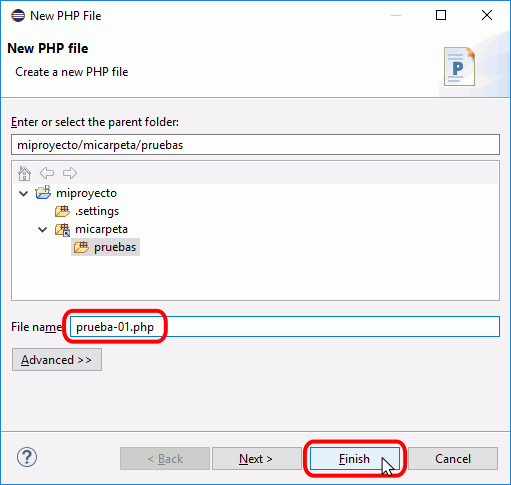
Una vez creado el archivo, este aparece en la vista Explorador de Proyecto y al hacer doble clic sobre un archivo, su contenido aparece en la vista Editor PHP.
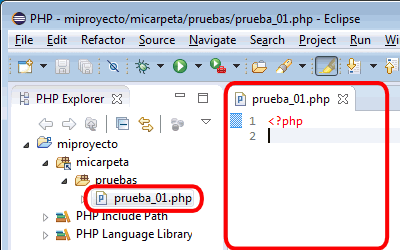
En el explorador de archivos de Windows puede comprobar que se ha creado el archivo:
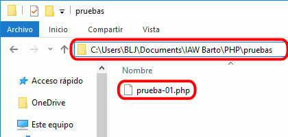
Ejecutar archivos PHP
Nota: Para abrir desde Eclipse los archivos PHP en el navegador predeterminado del sistema desde Eclipse, configure Eclipse tal y como se explica en la lección Configuración de Eclipse (2).
Antes de ejecutar un archivo PHP, guarde el archivo. Un asterisco en la pestaña del archivo indica que el archivo se ha modificado desde que se guardó por última vez. Para guardar el archivo, haga clic en el botón Guardar de la barra de herramientas (o use el atajo de teclado Ctrl+s).
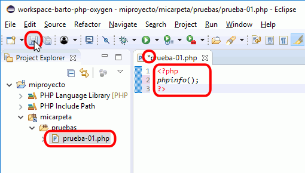
Para ejecutar un archivo PHP, seleccione el archivo y haga clic en el botón de ejecución. Puede seleccionar un archivo haciendo clic en él o en la pestaña en que esté abierto. En cualquier caso, el nombre del archivo seleccionado se muestra en la parte superior de la ventana.
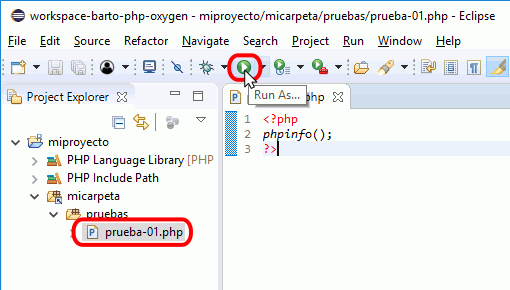
La primera vez que se ejecute un archivo, se mostrará una ventana preguntando si el archivo se quiere ejecutar en la línea de comandos o abrir en el navegador. En este curso se abrirán siempre los archivos en el navegador, por lo que elegiremos siempre la opción "PHP Web Application". También puede ejecutar un archivo haciendo clic derecho en el archivo y eligiendo la opción Run As > PHP Web Application.
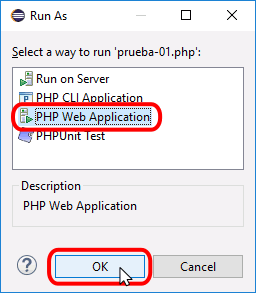
La primera vez que ejecute un archivo PHP, Eclipse PHP muestra la URL con la que se ejecutará el archivo. Puede modificar esta URL, aunque ha creado corrrectamente las carpetas y ha configurado correctamente el servidor web, no es conveniente hacerlo.
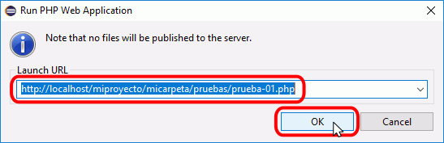
Al hacer clic en OK se abrirá una vista de navegador con el archivo seleccionado (en el caso de utilizar el navegador interno) o el navegador del sistema con el archivo seleccionado (en caso de utilizar el navegador del sistema).
Si Apache no está funcionando, se mostrará un aviso de error de conexión:
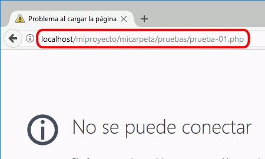
Si Apache está funcionando, pero no está configurado correctamente, se mostrará un aviso de archivo no encontrado (error 404):
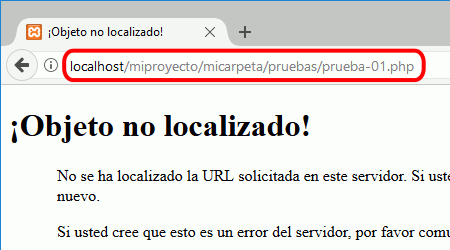
Si Apache está configurado correctamente, la página se mostrará en el navegador:
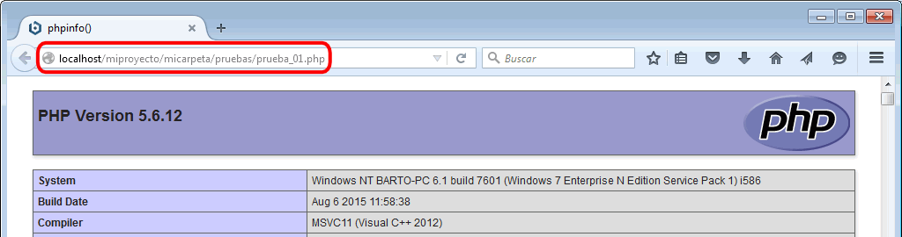
Configurar Apache
Al ejecutar un archivo PHP desde Eclipse PHP, Eclipse PHP envía al navegador una dirección construida a partir de los elementos (proyecto, carpetas, etc.) definidos en Eclipse PHP. Ese archivo se encuentra realmente en una carpeta del disco duro. Para que Apache pueda servir la página web al navegador, hay que relacionar la dirección (URL) con la ruta en el disco duro, lo que se consigue añadiendo un alias en el archivo de configuración de Apache httpd.conf.
Para saber qué alias hay que añadir, compare la dirección que genera Eclipse PHP (a partir del nombre del proyecto, del nombre de la carpeta enlazada y del nombre de carpetas y archivo) con la ruta en el disco del archivo, como ilustra la imagen siguiente:
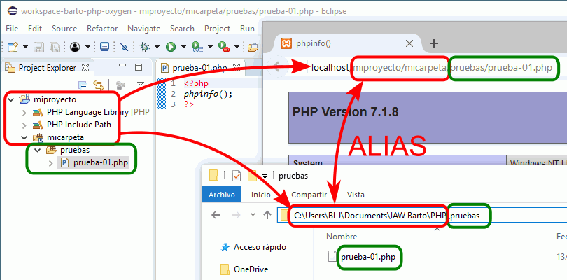
En el ejemplo definido en esta lección y que se muestra en las capturas, el nombre del proyecto es "miproyecto", el nombre de la carpeta enlazada es "micarpeta", se ha creado una carpeta "pruebas" y el fichero se llama "prueba_01.php". La dirección que genera Eclipse PHP es entonces: "http://localhost/miproyecto/micarpeta/pruebas/prueba_01.php", como muestra la tabla siguiente:
A partir de esta dirección, Apache tiene que poder encontrar el documento en el disco. En el ejemplo definido en esta lección y que se muestra en las capturas, la ruta real del archivo es:
en Windows: "C:\Users\NombreDeUsuario\Mis documentos\IAW Barto\ PHP\pruebas\prueba_01.php".
La dirección generada por Eclipse y la ruta real del archivo deben comparase de derecha a izquierda. La parte final común y el inicio de la dirección (http://localhost/) se pueden descartar. El resto es lo que se utiliza para crear el alias. En el ejemplo definido en esta lección y que se muestra en las capturas el alias enlazaría "miproyecto/micarpeta/" con "C:\Users\Barto\Mis documentos\IAW Barto\PHP", como muestra la tabla siguiente:
Así, en el ejemplo definido en esta lección y que se muestra en las capturas las líneas a añadir en el archivo httpd.conf serían las siguientes (resaltadas en negrita):
<IfModule alias_module>
# ...
Alias /miproyecto/micarpeta "C:\Users\Barto\Documents\IAW Barto\PHP"
<Directory "C:\Users\Barto\Documents\IAW Barto\PHP">
Options Indexes FollowSymLinks Includes ExecCGI
AllowOverride All
Require all granted
</Directory> # ...
</IfModule>
En cualquier directiva, debe escribir entre comillas las rutas que contengan espacios en blanco.
En resumen, si en el workspace se crea un proyecto y una carpeta enlazada que enlaza a un directorio en el disco, el alias a crear será:
# ...
Alias /nombre-proyecto/nombre-carpeta "ruta-del-directorio-en-el-disco"
<Directory "ruta-directorio-en-el-disco">
Options Indexes FollowSymLinks Includes ExecCGI
AllowOverride All
Require all granted
</Directory>
# ...
Si en el workspace hay varias carpetas enlazadas, habrá que crear tantos alias como carpetas enlazadas (tanto si están en el mismo proyecto como si están en proyectos diferentes).
Configurar Eclipse PHP y Apache en clase
Los nombres del proyecto, de la carpeta enlazada y de la ubicación de los archivos PHP recomendados para utilizar en clase se proponen en el ejercicio Apache y Eclipse 6.
Crear archivos HTML
Para crear un archivo HTML en una carpeta, seleccione la carpeta haciendo clic en ella (su nombre se mostrará en la parte inferior de la ventana) y elija la opción de menú File > New > HTML File (también puede hacer clic derecho sobre la carpeta y elegir la opción New > HTML File).
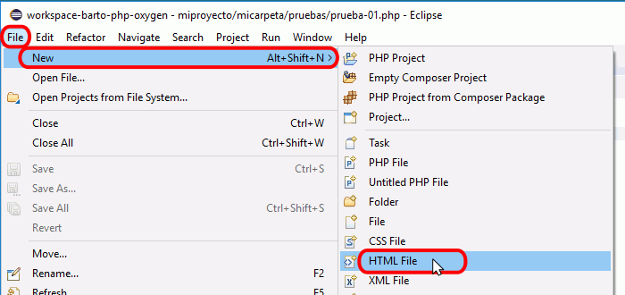
Se abrirá una ventana de creación de archivo. Escriba el nombre del archivo. El nombre no debe contener espacios ni acentos, ya que Eclipse PHP lo utiliza para construir la URL local del archivo. En el ejemplo, se ha escrito el nombre "prueba-01.html".
Si quiere utilizar la plantilla predeterminada (documento HTML 5), haga clic en Finish. Si quiere elegir una plantilla distinta, haga clic en Next.
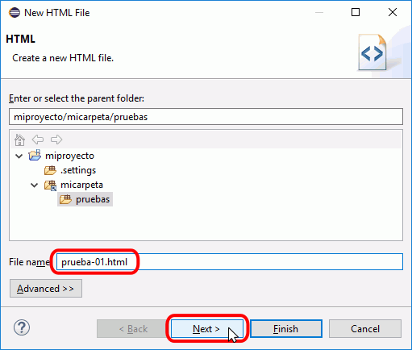
En la segunda pantalla, elija la plantilla de documento HTML y haga clic en Finish. En el ejemplo se ha elegido la plantilla HTML 5.
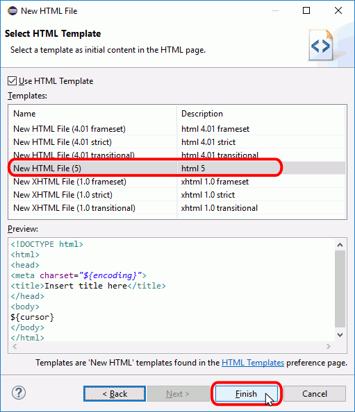
Una vez creado el archivo, este aparece en la vista Explorador de Proyecto y su contenido aparece en la vista Editor HTML.
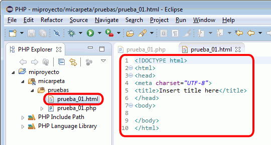
En el explorador de archivos de Windows puede comprobar que se ha creado el archivo.
Ejecutar archivos HTML
Eclipse PHP no es capaz de ejecutar directamente en el servidor archivos HTML, pero se puede crear una herramienta externa (External Tool) que permita hacerlo.
Crear la herramienta externa
Para crear la herramienta externa, elija el menú Run > External Tools > External Tools Configurations ....
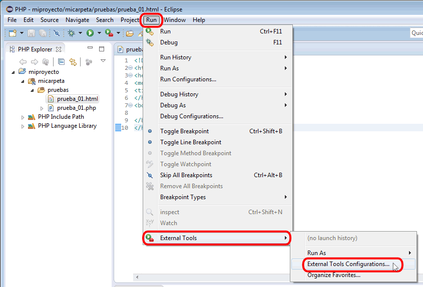
Se abrirá la ventana de administración de las configuraciones de herramientas externas. haga clic en "Program".
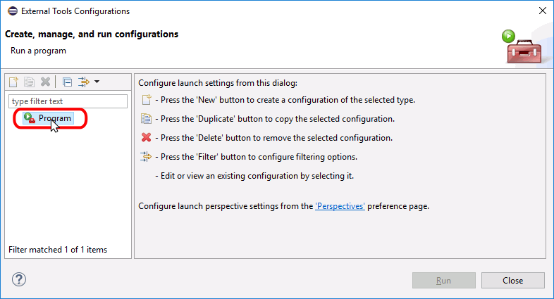
A continuación haga clic en el icono "New launch configuration".
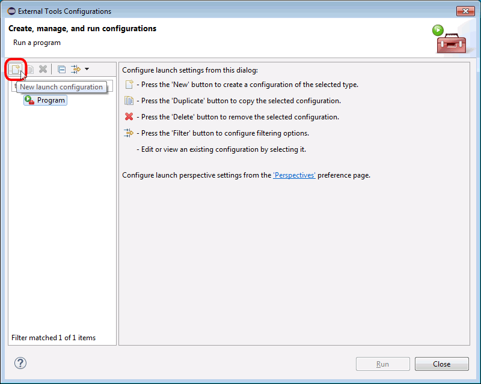
Se mostrará la nueva herramienta externa, con sus opciones de configuración en blanco:
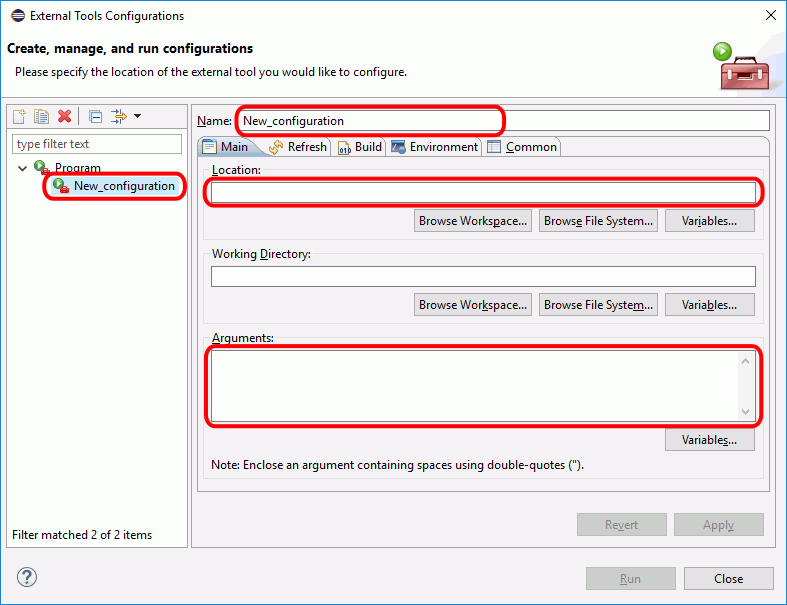
Para configurar la herramienta, escriba:
el nombre de herramienta: en el ejemplo, "HTML en Firefox",
la ruta de la herramienta: en el ejemplo se ha seleccionado el ejecutable firefox.exe del navegador Firefox haciendo clic en "Browse File System...",
los argumentos: en el ejemplo, "localhost${container_path}/${resource_name}".
Para finalizar, haga clic en el botón Apply.
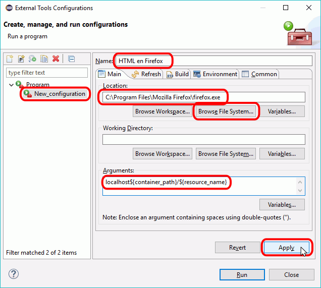
Se mostrará la nueva configuración de herramienta externa recién creada, con su nombre. Finalmente, haga clic en Run para ejecutar en el servidor el archivo HTML elegido al principio y que Eclipse recuerde que se ha utilizado la herramienta externa.
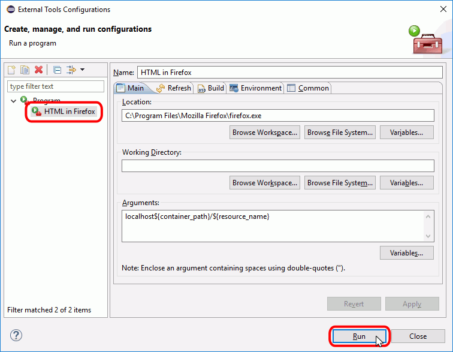
Al hacer clic en Run, se abrirá Firefox mostrando el archivo en el servidor local:
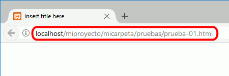
De la misma manera, puede crear otras herramientas externas para ejecutar los archivos en otros navegadores (Chrome, Edge, etc.)
Utilizar la herramienta externa
Una vez creada la herramienta externa, para ejecutar un archivo HTML, seleccione el archivo, abra el menú Run > External Tools y elija la herramienta externa creada anteriormente (en el ejemplo, la herramienta se llama "HTML en Firefox"):
Puede seleccionar un archivo haciendo clic en él o en la pestaña en que esté abierto. En cualquier caso, el nombre del archivo seleccionado se muestra en la parte superior de la ventana.
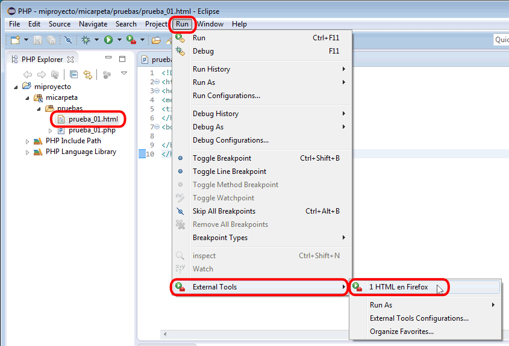
A continuación, se abrirá Firefox mostrando el archivo en el servidor local:
En vez del menú, puede utilizar el botón de herramientas externas. Y como la herramienta externa permite ejectuar tanto archivos HTML como archivos PHP, este botón resulta más cómodo que el botón de ejecución.
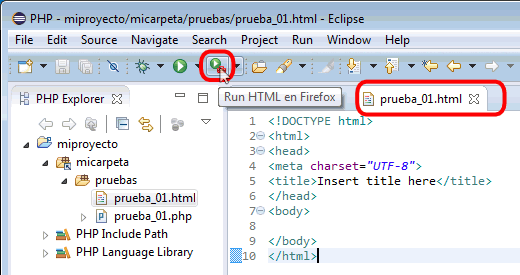
El botón de herramientas externas aplica la última herramienta aplicada, pero haciendo clic en el desplegable puede ver todas las herramientas externas y elegir una específica:


{kind=link}
{kind=link}
{kind=link}